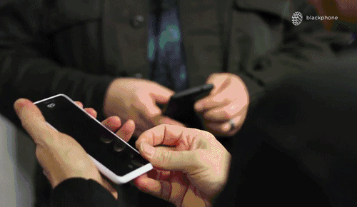
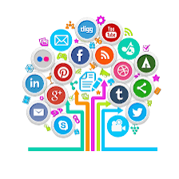
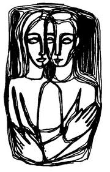
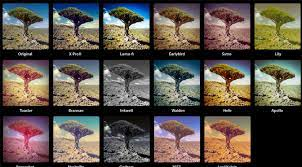
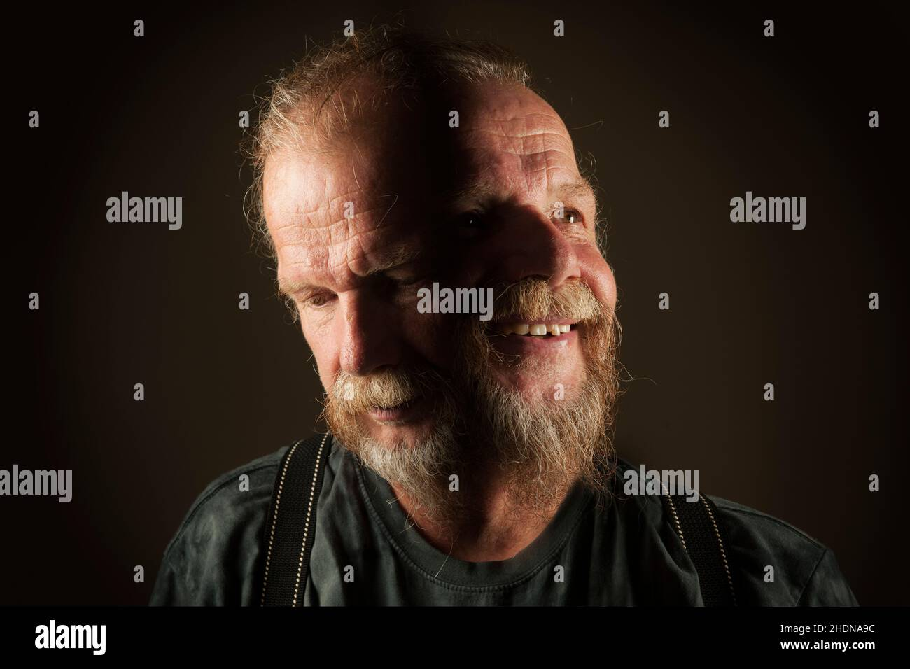
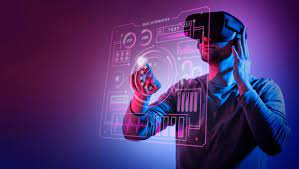
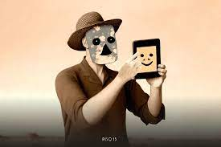

La Distorsión de la realidad y lo virtual en las redes sociales
Las redes sociales han revolucionado la forma en que las personas se comunican, comparten información y mantienen conexiones en línea. Sin embargo, este fenómeno digital ha traído consigo un conjunto de desafíos y preocupaciones, entre ellos, la creciente prevalencia de las distorsiones de la realidad. La distorsión de la realidad en las redes sociales se refiere al acto de presentar una versión idealizada o inauténtica de la vida, la identidad, los logros o la información personal en las plataformas digitales.
Estas distorsiones pueden manifestarse de diversas maneras y a menudo están motivadas por una serie de factores, incluyendo el deseo de impresionar a otros, la búsqueda de validación social o incluso la propagación de desinformación. Este fenómeno plantea importantes cuestiones éticas y sociales, ya que puede tener un impacto significativo en la salud mental de las personas, la percepción pública de los acontecimientos y la calidad de la información en línea.

En esta exploración, analizaremos algunas de las formas más comunes de distorsión de la realidad en las principales plataformas de redes sociales, como Facebook, Instagram, Twitter y TikTok. Al proporcionar ejemplos concretos y destacar los efectos potenciales de estas distorsiones, pretendemos crear una mayor conciencia sobre la importancia de mantener la integridad y la autenticidad en el mundo digital, al tiempo que se fomenta un uso responsable de las redes sociales. Es fundamental comprender que, aunque las redes sociales son una herramienta poderosa para la comunicación y la conexión, también pueden ser un terreno fértil para la creación de realidades alternativas, lo que subraya la necesidad de una navegación consciente y crítica en este entorno en constante evolución
Tendencias en Redes Sociales

- Video en Vivo y Contenido Efímero
- Contenido Generado por el Usuario
- E-commerce en Redes Sociales
- Redes Sociales de Nicho
- Enfoque en la Seguridad y la Privacidad
- Inteligencia Artificial y Algoritmos
- Colaboración con Influencers
- Cambio de Plataformas Populares
La distorsión de la realidad en las redes sociales puede contribuir a la propagación de estándares de belleza poco realistas, la percepción de que la vida de los demás es perfecta y la polarización de opiniones. Además, puede socavar la confianza en la información verídica y erosionar la credibilidad de las fuentes de noticias confiables.
Es importante que los usuarios de las redes sociales sean conscientes de estos peligros y practiquen la navegación crítica, la verificación de datos y la responsabilidad al interactuar en línea. Las redes sociales, cuando se utilizan con responsabilidad, pueden ser herramientas valiosas para la comunicación, la conexión y el cambio social positivo. La educación y la promoción de la alfabetización digital son esenciales para abordar estos desafíos y garantizar que las redes sociales sean un espacio más saludable y auténtico para todos.
Ejemplos de distorsiones de realidad
La distorsión entre la realidad virtual y la realidad en las redes sociales es un fenómeno que se ha vuelto cada vez más evidente en la era digital y puede tener varios aspectos negativos y positivos. Aquí te presento algunos de los aspectos más destacados de esta distorsión:
- Idealización de la vida:
 En las redes sociales, las personas a menudo presentan una versión idealizada de sus vidas. Publican fotos y actualizaciones que muestran los momentos más felices, exitosos y emocionantes de sus vidas, lo que puede crear la impresión de que su vida es perfecta. Esto puede llevar a que otros se sientan insatisfechos con sus propias vidas en comparación.
- Filtros y edición de fotos:
Muchas personas utilizan filtros y herramientas de edición de fotos para mejorar su apariencia en las redes sociales. Esto puede hacer que las imágenes en línea sean muy diferentes de cómo lucen en la vida real, lo que contribuye a la distorsión de la imagen corporal y la autoimagen.
- Comparación constante:
La constante exposición a imágenes y vidas "perfectas" en las redes sociales puede llevar a una comparación constante con los demás. La gente tiende a comparar sus vidas, cuerpos y logros con lo que ven en línea, lo que puede generar sentimientos de inseguridad y ansiedad.
- Aislamiento social:
Las interacciones en línea pueden llevar a un aislamiento social, ya que las personas pueden pasar más tiempo interactuando en línea que en la vida real. Esto puede dar lugar a una falta de habilidades sociales y una disminución en las relaciones cara a cara.

- Efectos psicológicos:
La distorsión entre la realidad virtual y la realidad en las redes sociales puede tener efectos psicológicos negativos, como la depresión, la ansiedad y la soledad, especialmente entre los jóvenes que son más susceptibles a la presión social en línea.
Por otro lado, también hay aspectos positivos en las redes sociales y la realidad virtual, como la capacidad de mantenerse conectado con amigos y familiares, acceder a información valiosa y educativa, y utilizar plataformas para la conciencia social y el cambio positivo.
Es importante recordar que lo que se muestra en las redes sociales no siempre refleja la realidad completa. Es fundamental mantener una perspectiva equilibrada, recordar que nadie es perfecto y aprender a usar las redes sociales de manera saludable y consciente. La educación sobre la alfabetización en medios digitales y la promoción de la autenticidad en línea son pasos importantes para abordar la distorsión entre la realidad virtual y la realidad en las redes sociales.
Tabla de Distorsión de la Realidad en Redes Sociales
| Red Social |
Forma de Distorsión |
Ejemplos |
| Facebook |
Edición excesiva de fotos |
Publicación de fotos retocadas para aparentar una piel perfecta o una vida más emocionante. |
| Omisión de problemas personales |
Mostrar solo los aspectos positivos de la vida y ocultar las luchas y dificultades personales. |
| Instagram |
Publicación selectiva de momentos felices |
Compartir fotos de momentos felices y emocionantes mientras se ignora la vida cotidiana. |
| Ocultamiento de problemas personales |
No hablar de desafíos personales como la salud mental o las dificultades en relaciones. |
| Twitter |
Difusión de información falsa |
Compartir noticias y datos no verificados que pueden contribuir a la desinformación. |
| TikTok |
Creación de contenido viral |
Crear videos llamativos que pueden no representar la realidad, como desafíos peligrosos o trucos de edición de video. |
Conclusión psicológica de las distorsiones
- Comparación Social y Autoestima: La exposición constante a vidas aparentemente perfectas y a imágenes ideales de belleza en las redes sociales puede llevar a la comparación social. Los usuarios tienden a comparar sus vidas y apariencia con las de los demás, lo que puede socavar su autoestima y generar sentimientos de insatisfacción y envidia.
- Presión Social y Miedo al Juicio: La necesidad de mantener una imagen idealizada en línea puede generar una presión constante para mantener una apariencia y un estilo de vida perfectos. El temor al juicio de los demás puede crear una sensación de inseguridad y ansiedad.
- Desconexión y Aislamiento: La distorsión de la realidad puede dar lugar a la percepción de que todos los demás tienen vidas perfectas , lo que puede llevar a una sensación de aislamiento. Los usuarios pueden sentir que no pueden compartir sus luchas y desafíos, lo que dificulta la conexión genuina con otros.
- Polarización y Sesgo de Confirmación: La difusión de información errónea en las redes sociales puede llevar a la polarización de opiniones y al refuerzo del sesgo de confirmación. Los usuarios pueden exponerse principalmente a información que respalda sus creencias, lo que puede limitar su visión del mundo y su capacidad para considerar perspectivas diferentes.
- Ansiedad y Depresión: La constante exposición a contenido idealizado, la presión social y la comparación pueden contribuir a la ansiedad y la depresión. Los usuarios pueden sentirse abrumados por la necesidad de mantener una imagen perfecta en línea.
- Autenticidad y Salud Mental: Fomentar la autenticidad y la apertura en las redes sociales puede tener un impacto positivo en la salud mental. Los usuarios que se sienten cómodos compartiendo sus experiencias y desafíos pueden experimentar una mayor sensación de comunidad y apoyo.
Relación de los problemas de las redes Sociales
© Alonso Augusto Isaías Lara Bravo

Ir al principal